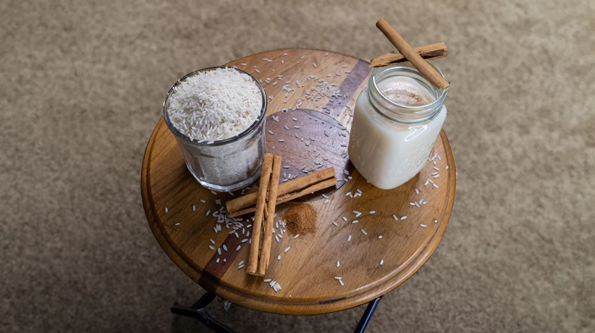

집에서 이화주 만들기, 초보도 성공하는 키트 활용법
사진: Lena Ti / Pexels (무료 이미지, 출처 표기)
이화주 키트, 과연 초보자도 가능할까요?

집에서 직접 술을 담그는 것이 어렵게 느껴지시나요? 특히 '떠먹는 막걸리'로 불리는 이화주(梨花酒)는 그 독특한 질감과 맛 때문에 더욱 진입 장벽이 높아 보일 수 있습니다. 하지만 최근에는 누구나 쉽게 집에서 이화주를 만들 수 있도록 돕는 키트 제품들이 다양하게 출시되고 있습니다.
이화주는 조선시대부터 전해 내려오는 전통주로, 배꽃 피는 시기에 담근다고 하여 이름 붙여졌습니다. 일반 막걸리와 달리 숟가락으로 떠먹는 요구르트나 죽 같은 형태가 특징입니다. 이화주 키트는 복잡한 재료 준비와 과정 대신, 미리 소분된 재료와 상세한 설명서를 제공하여 초보자도 실패 확률을 낮춰줍니다.
이화주 키트 구매 전 꼭 확인해야 할 것들
시중에 다양한 이화주 키트가 판매되고 있어 어떤 제품을 골라야 할지 고민될 수 있습니다. 다음 체크리스트를 통해 자신에게 맞는 키트를 선택하고 필요한 준비물을 미리 파악하세요.
- 구성품 확인: 키트에는 보통 찹쌀가루, 누룩(발효제), 발효 용기, 상세 설명서가 포함됩니다. 간혹 물엿이나 효모 등이 추가된 키트도 있습니다.
- 추가 준비물 확인: 키트에 없는 저울, 큰 볼, 주걱, 깨끗한 천, 온도계 등은 직접 준비해야 합니다. 설명서를 꼼꼼히 읽고 필요한 도구를 미리 갖추세요.
- 누룩 종류 및 용량: 키트에 사용된 누룩의 종류(밀누룩, 쌀누룩 등)에 따라 이화주 맛이 미묘하게 달라질 수 있습니다. 또한 키트 용량에 따라 만들어지는 이화주의 양도 다르니, 처음이라면 소량부터 시작하는 것을 추천합니다.
- 설명서의 상세함: 초보자에게는 사진이나 그림이 포함된 상세한 설명서가 큰 도움이 됩니다. 발효 온도, 기간, 저어주는 방법 등이 구체적으로 안내되어 있는지 확인하세요.
떠먹는 막걸리, 이화주 만드는 상세 과정
이화주 키트를 이용하면 비교적 간단하게 나만의 전통주를 만들 수 있습니다. 2026년 8월 기준으로 일반적인 이화주 키트 활용법을 안내해드리니, 반드시 구매한 키트의 설명서를 따라주세요.
- 재료 및 도구 소독: 이화주를 담그기 전, 사용할 모든 도구와 용기를 뜨거운 물로 소독하거나 알코올로 닦아 깨끗하게 준비합니다. 이는 잡균 번식을 막아 실패를 줄이는 가장 중요한 과정입니다.
- 찹쌀가루 반죽 및 찌기: 키트에 포함된 찹쌀가루에 뜨거운 물을 조금씩 부어가며 익반죽합니다. 손에 들러붙지 않을 정도로 치대어 부드러운 반죽을 만들고, 적당한 크기로 빚어 찜기에 넣고 10~15분간 찝니다.
- 누룩과 섞기: 쪄낸 찹쌀 반죽을 식힌 후, 키트에 동봉된 누룩과 찬물을 함께 넣고 잘 치대어 섞습니다. 이때 누룩이 뭉치지 않고 고루 섞이도록 충분히 반죽하는 것이 중요합니다.
- 발효 시작: 반죽을 소독된 발효 용기에 담고, 깨끗한 천이나 뚜껑을 덮어줍니다. 이때 공기가 완전히 차단되지 않도록 약간의 틈을 두는 것이 좋습니다.
- 발효 중 관리: 20~25도 사이의 일정한 온도에서 발효시키는 것이 좋습니다. 하루에 1~2회 정도 주걱으로 아래위로 잘 저어주어 발효가 고루 진행되도록 돕습니다. 초기에는 기포가 활발히 올라오고, 점차 가라앉으며 이화주 특유의 걸쭉한 질감을 가지게 됩니다.
- 완성 및 숙성: 발효 기간은 보통 3~7일 정도 소요됩니다. 단맛과 신맛의 균형, 걸쭉한 정도를 확인하여 발효가 충분히 되었다고 판단되면 냉장고에 보관하여 숙성시킵니다. 차갑게 숙성될수록 맛이 안정됩니다.
발효 중 궁금증 해결: 실패 없이 이화주 담그는 팁
이화주 발효 과정에서 흔히 궁금해하는 점들을 모았습니다. 아래 팁을 참고하면 실패 없이 맛있는 이화주를 만들 수 있습니다.
- 적정 온도 유지: 발효 온도는 이화주 맛을 결정하는 가장 중요한 요소입니다. 20~25도를 벗어나 너무 낮으면 발효가 더디고, 너무 높으면 잡균 번식이나 신맛이 강해질 수 있습니다. 실내 온도가 불안정하다면 아이스박스나 보온 주머니를 활용하여 온도를 조절해보세요.
- 저어주는 시기와 횟수: 발효 초기에는 하루 2회 정도, 후기에는 1회 정도로 저어주는 것이 일반적입니다. 너무 자주 저으면 산소 접촉이 많아져 신맛이 강해질 수 있고, 너무 적게 저으면 발효가 고르지 않을 수 있습니다.
- 발효 냄새와 색깔 변화: 발효가 진행되면서 달콤하면서도 약간 시큼한 술 냄새가 나는 것이 정상입니다. 색깔은 점차 밝은 미색을 띠게 됩니다. 만약 곰팡이가 피거나 역한 냄새가 난다면 실패했을 가능성이 높습니다.
- 발효가 안 되는 것 같아요: 온도가 너무 낮거나 누룩 활성이 부족할 수 있습니다. 온도를 조금 높여보거나, 키트 설명서에 따라 추가 조치를 고려해야 합니다.
완성된 이화주 보관 및 맛있게 즐기는 법
정성껏 담근 이화주는 이제 맛있게 즐길 일만 남았습니다. 올바른 보관법과 활용법으로 이화주의 매력을 만끽하세요.
완성된 이화주는 냉장고에 밀봉하여 보관하는 것이 좋습니다. 냉장 보관 시 약 2주에서 한 달 정도 맛과 풍미를 유지할 수 있습니다. 시간이 지남에 따라 신맛이 강해지거나 발효가 지속될 수 있으니 가급적 빨리 드시는 것을 권장합니다.
이화주는 그 자체로 떠먹어도 맛있지만, 다양한 방식으로 즐길 수 있습니다. 신선한 과일(딸기, 블루베리 등)이나 꿀을 곁들이면 색다른 맛을 느낄 수 있습니다. 요거트처럼 시리얼과 함께 아침 식사로 활용하거나, 탄산수나 사이다를 소량 섞어 시원하게 마셔도 좋습니다.
집에서 이화주 만들 때 주의할 점
성공적인 이화주 만들기를 위해 몇 가지 주의할 점을 알려드립니다.
- 철저한 위생 관리: 모든 과정에서 손과 도구, 용기를 깨끗하게 유지하는 것이 가장 중요합니다. 잡균이 번식하면 이화주가 상하거나 불쾌한 맛이 날 수 있습니다.
- 설명서 준수: 키트마다 재료 비율이나 발효 조건이 조금씩 다를 수 있으므로, 반드시 구매한 키트의 설명서를 우선적으로 따르세요. 임의로 과정을 변경하지 않는 것이 좋습니다.
- 과도한 기대 금지: 수제 이화주는 공장에서 생산되는 제품과 맛이나 질감이 다를 수 있습니다. 완벽하게 똑같지 않더라도 '내가 만든 술'이라는 특별한 경험을 즐기는 데 집중하는 것이 중요합니다.
- 알코올 도수 유의: 집에서 만든 술은 정확한 알코올 도수를 알기 어렵습니다. 예상보다 도수가 높을 수 있으니 음주 시에는 적당량을 섭취하고, 미성년자는 섭취해서는 안 됩니다.
🔗 이 글도 함께 보면 좋아요: 겨울철 난방비 30% 줄이는 7가지 비결: 지금 바로 시작해야 할 체크리스트
관련 추천 상품
이 포스팅은 쿠팡 파트너스 활동의 일환으로, 이에 따른 일정액의 수수료를 제공받습니다.